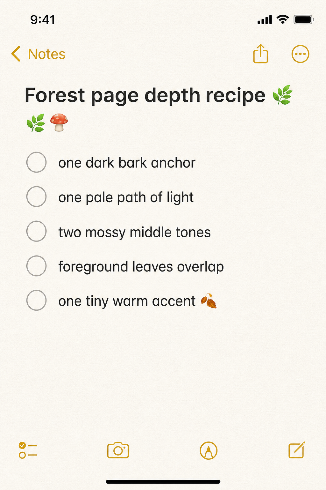
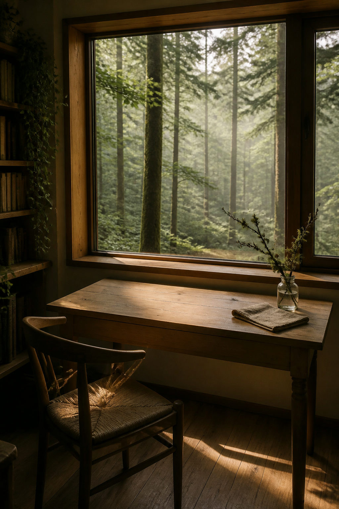
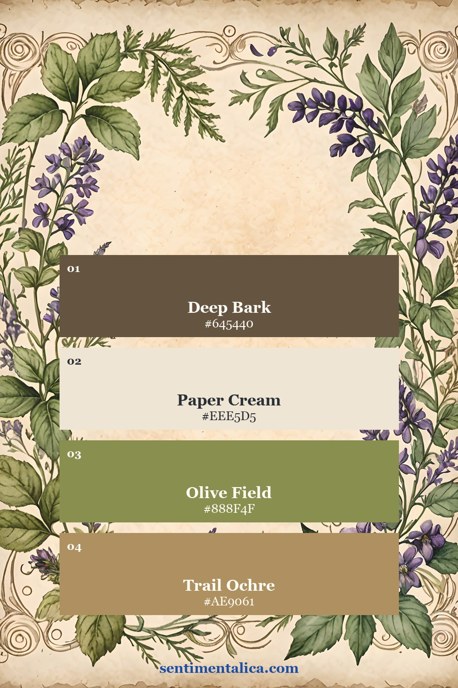
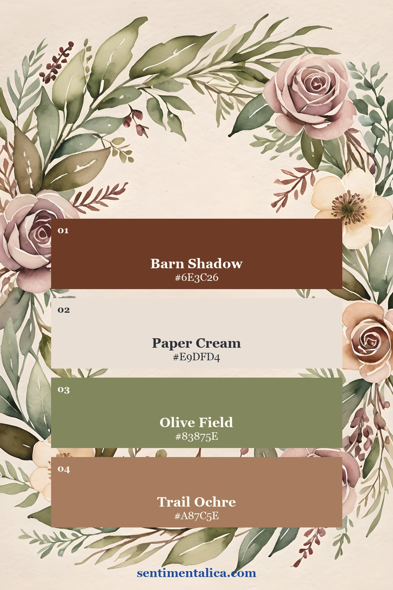
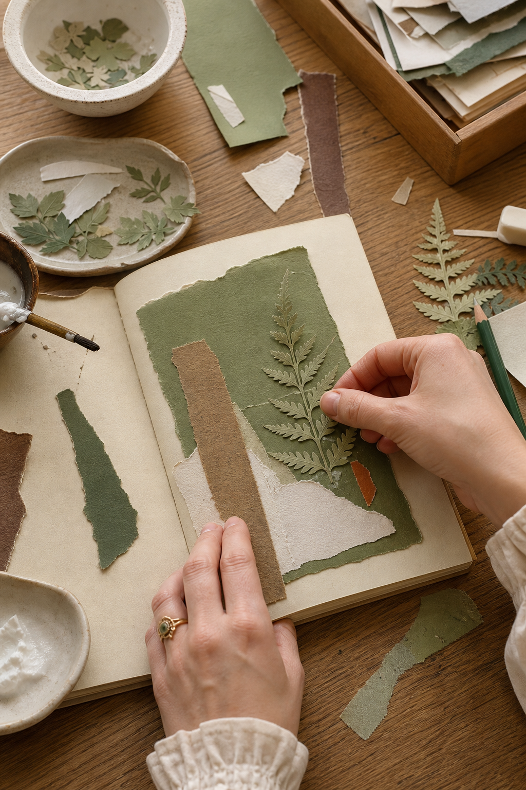
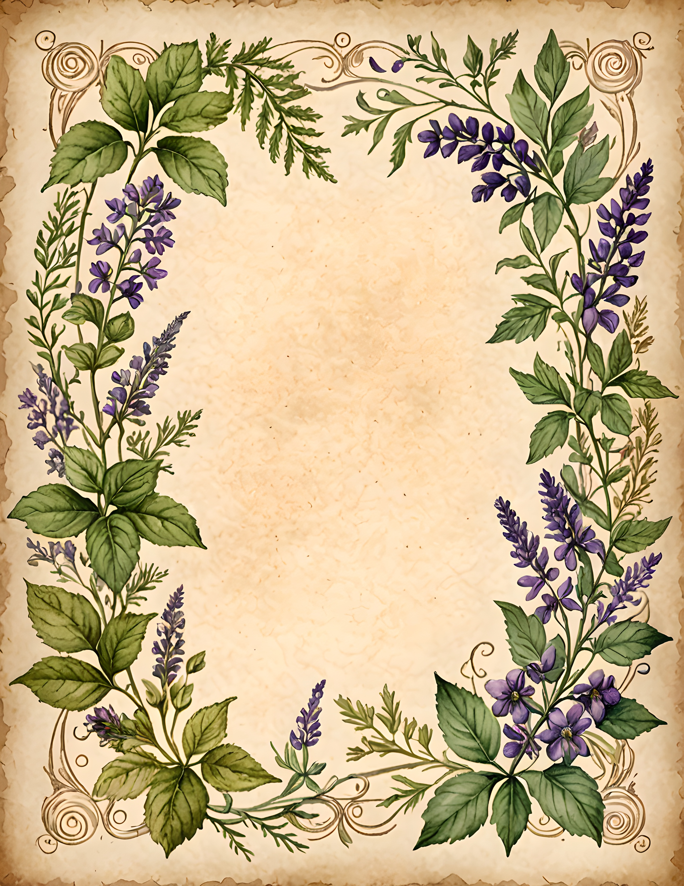
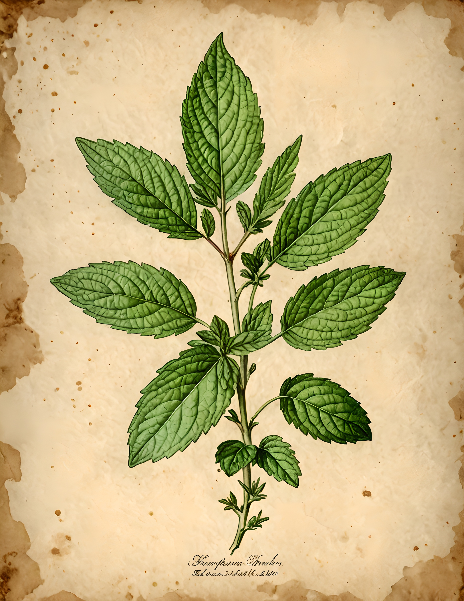
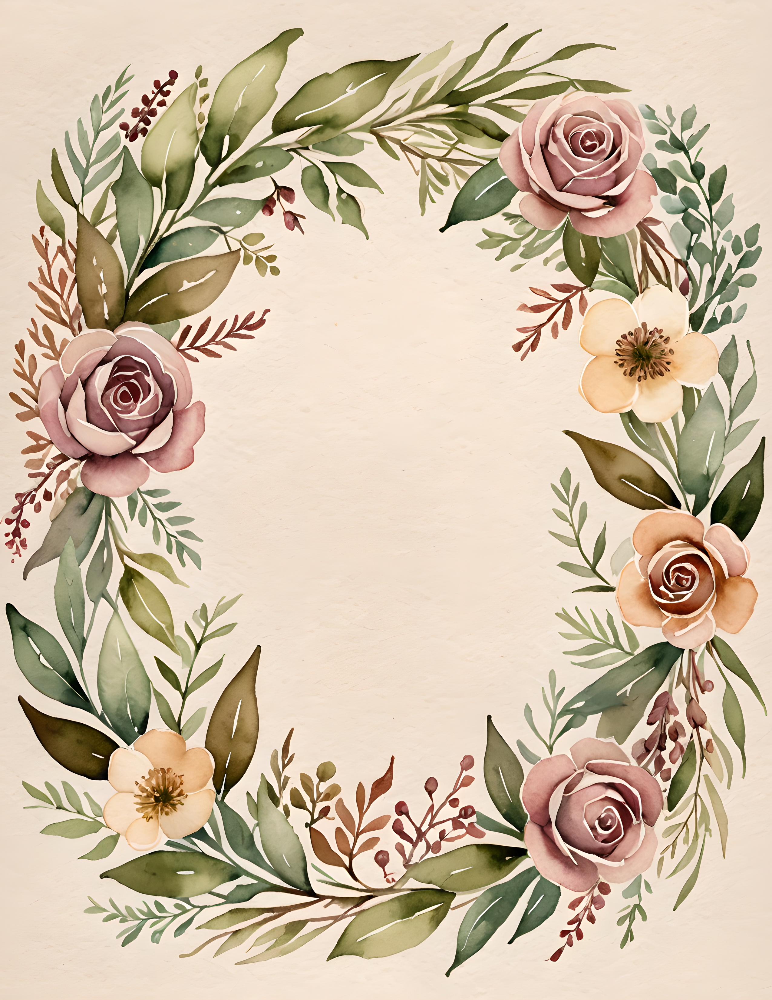

Forest journal inspiration often begins with beautiful greens and ends with a page where every layer has the same value. Moss, fern, bark, and old paper merge into one soft brown-green patch. Depth does not require more materials. It needs a clear dark anchor, a pale path of light, two middle tones, and one small warm accent that helps the eye travel through the page.

Place the darkest shape first
Choose one deep shape that can behave like the nearest tree trunk, shadowed leaf, torn photograph edge, or dark label. It does not need to be large. A narrow vertical strip can establish the foreground and make paler pieces seem farther away.
Keep the darkest value in one main area rather than scattering small black details everywhere. Repeating it once in a tiny word, stitch, or corner is enough to make the page feel connected.
Make a path for light
Use cream paper, pale sky blue, soft fog, or an unprinted writing area to create a route through the composition. The light area can travel diagonally, open behind the focal image, or remain as a broad center. This is what prevents greens and browns from becoming heavy.

Before adding anything else, squint at the page. You should still see one dark shape and one light shape. If they disappear, remove a middle-value layer rather than adding more contrast everywhere.
Build three distances with overlap
Think of the page as foreground, middle distance, and background. A crisp leaf or torn bark-colored strip can sit in front. Softer botanical paper belongs in the middle. Faint writing, misty color, or cream paper can recede behind both.


Overlap creates more depth than lining pieces up. Let one leaf cross a label edge. Tuck a narrow scrap behind a larger page. Keep some edges crisp and tear others softly so the layers do not all sit at the same visual distance.
Add one warm point
A tiny rust stitch, ochre ticket, rose hip, wax-colored pencil mark, or warm brown button can wake up a green page. The accent should be small enough to feel discovered. If you repeat it, make the second appearance much quieter.

For an easy arrangement, place the warm accent near the point where the light path meets the dark anchor. That meeting place becomes the natural focal point. It may hold a date, a short observation, or one small image.
Use botanical pages as forest structure
A forest journal does not need to show a literal woodland scene on every page. Herbarium sheets, pressed flowers, specimen labels, and greenhouse imagery can suggest the quieter act of studying what grows there. Herbal Press is strongest for leafy specimens and old botanical paper. Pressed Bloom brings softer florals and Victorian garden color.



Stop when the page has a readable dark, a readable light, and one place you want to look. The quiet areas are part of the forest too. Find more gentle page-building ideas in the Sentimentalica journal.